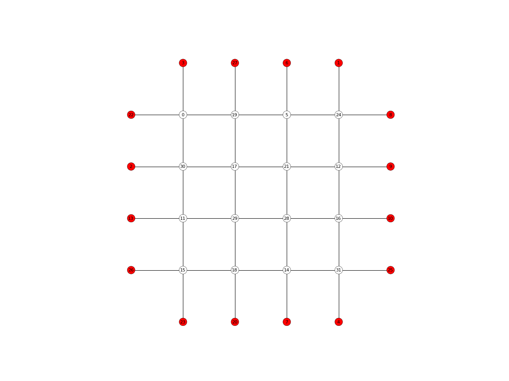

NetworkPlotter
-
class
compas.plotters.NetworkPlotter(network, **kwargs)[source] Bases:
compas.plotters.plotter.PlotterDefinition of a plotter object based on matplotlib for compas Networks.
- Parameters
network (object) – The network to plot.
-
title str – Title of the plot.
-
network object – The network to plot.
-
vertexcollection object – The matplotlib collection for the network vertices.
-
edgecollection object – The matplotlib collection for the network edges.
-
defaults dict – Dictionary containing default attributes for vertices and edges.
Notes
For more info, see 1.
References
- 1
Hunter, J. D., 2007. Matplotlib: A 2D graphics environment. Computing In Science & Engineering (9) 3, p.90-95. Available at: http://ieeexplore.ieee.org/document/4160265/citations.
Examples
import compas from compas.datastructures import Network from compas.plotters import NetworkPlotter network = Network.from_obj(compas.get('lines.obj')) plotter = NetworkPlotter(network) plotter.draw_vertices( text='key', facecolor={key: '#ff0000' for key in network.leaves()}, radius=0.15 ) plotter.draw_edges() plotter.show()
Methods
__init__(network, **kwargs)Initialises a network plotter object
clear()Clears the network plotter edges and vertices.
clear_collection(collection)Clears a matplotlib collection object.
Clears the network object edges.
Clears the netwotk plotter vertices.
draw_arrows(arrows)Draws arrows on a 2D plot.
draw_as_lines([color, width])draw_edges([keys, width, color, text, …])Draws the network edges.
draw_lines(lines)Draws lines on a 2D plot.
draw_points(points)Draws points on a 2D plot.
draw_polygons(polygons)Draws polygons on a 2D plot.
draw_vertices([keys, radius, text, …])Draws the network vertices.
gifified(**kwds)Create a context for making animated gifs using a callback for updating the plot.
register_listener(listener)Register a listener for pick events.
save(filepath, **kwargs)Saves the plot to a file.
save_gif(filepath, images[, delay, loop])Save a series of images as an animated gif.
show([autoscale, tight])Displays the plot.
top()Bring the plotting window to the top.
update([pause])Updates and pauses the plot.
Updates the plotter edge collection based on the network.
update_linecollection(collection, segments)Updates a line collection.
update_pointcollection(collection, centers)Updates the location and radii of a point collection.
update_polygoncollection(collection, polygons)update_vertices([radius])Updates the plotter vertex collection based on the network.
Attributes
axesReturns the axes subplot matplotlib object.
bgcolorReturns the background color.
canvasReturns the canvas of the figure instance.
figureReturns the matplotlib figure instance.
Returns the title of the plot.